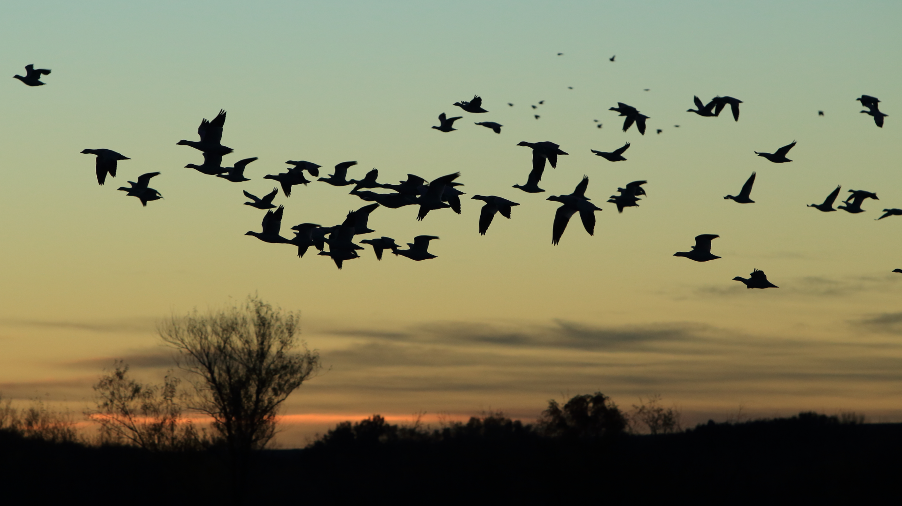
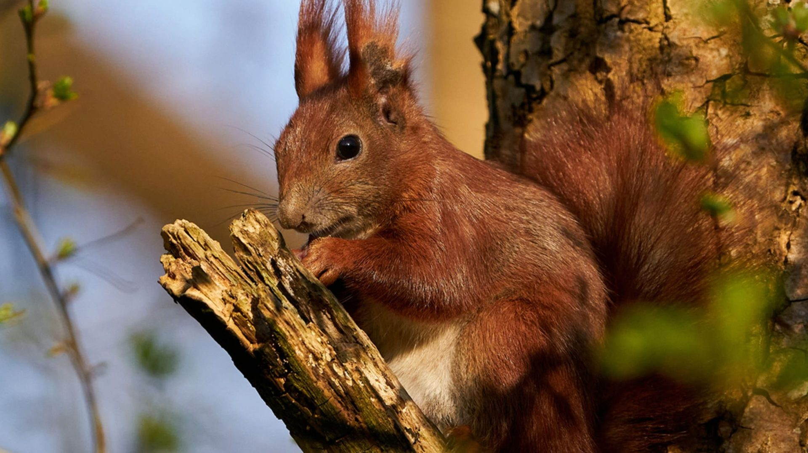
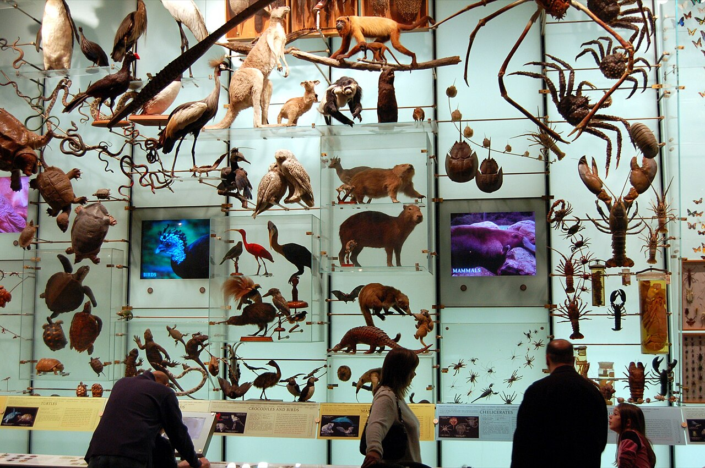
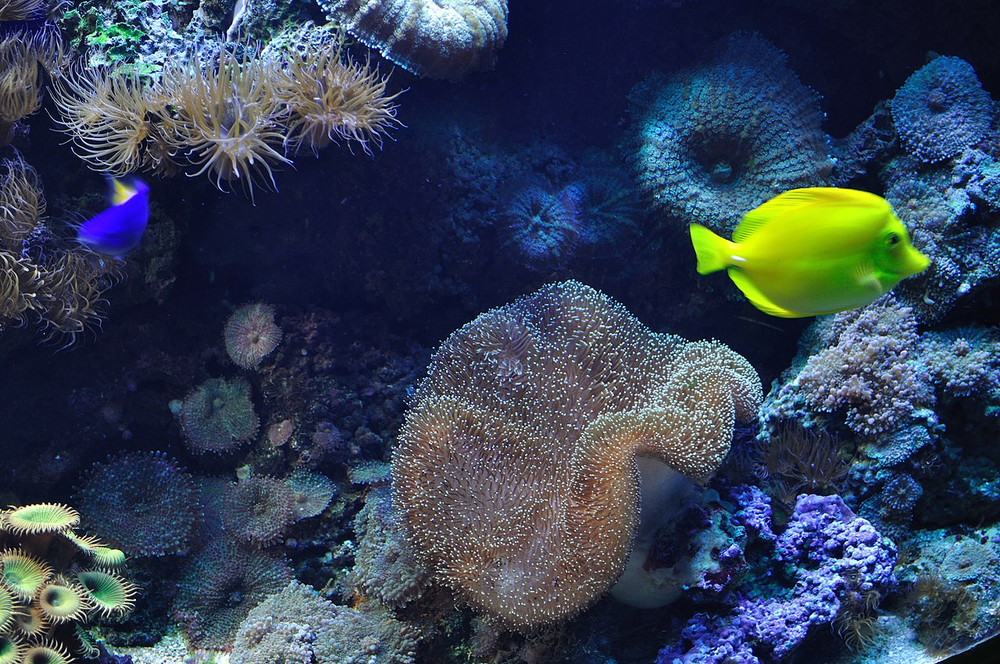
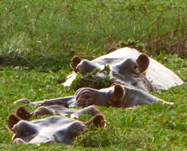
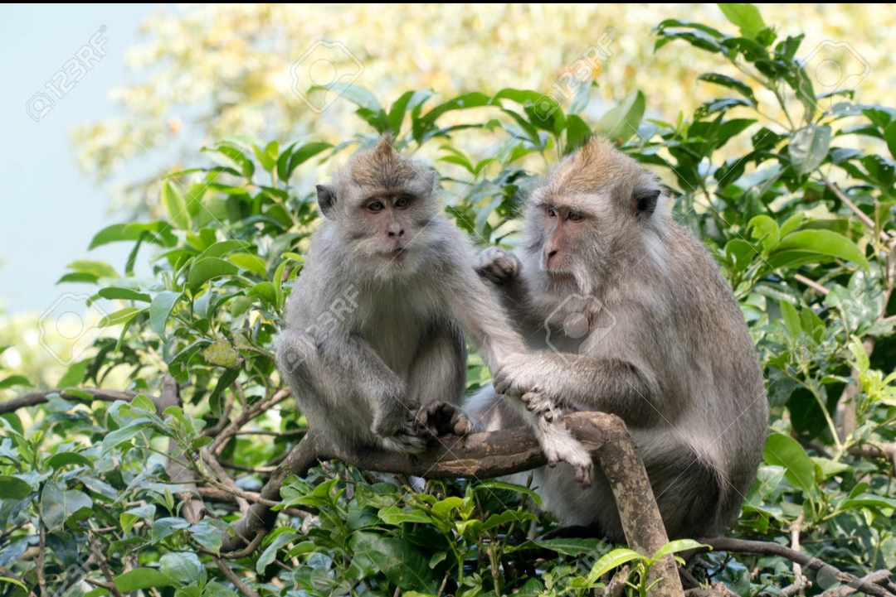
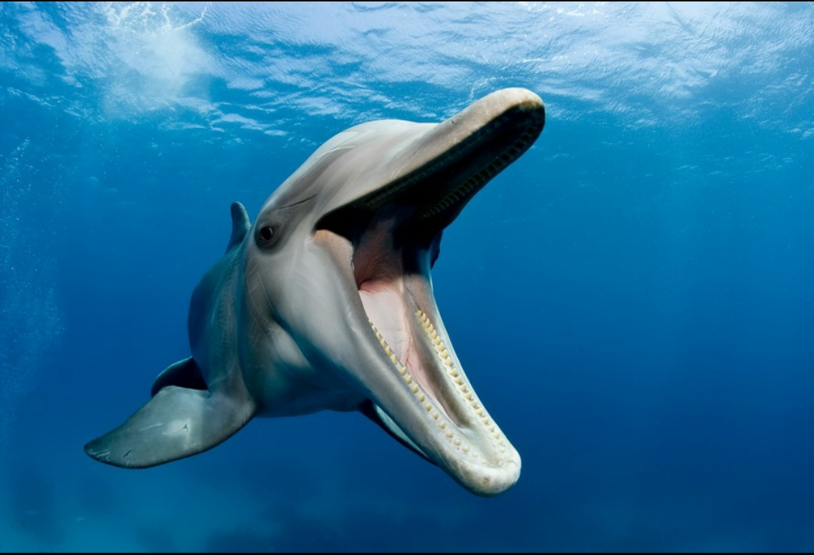

Proteção Ambiental
A fauna é o conjunto de animais que vivemem uma determinada regiao, ou um periodo de tempo.
Dentro da biodiversidade, a fauna representa a parte de animal da diversidade biologica. Na Guine-Bissau existem varias especies importantes, como: Macacos, Antilopes, Tratarugas marinhas, e diversas especies de aves.








Importancia da fauna na biodiversidade
- Manter o epuilibrio ecologico
- Participar na cada alimentar
- Ajuda na polinizacao e despercao de sementes
- Contribui para a economia (turismo e pesca)
- Tem valor cultural e cientifico